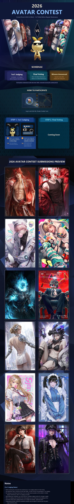

Korean Lost Ark · Patch Translation
May 6 (Wed) Update Details
Direct translation. No commentary or extrapolation added.
Sound
- Sound system optimization performed for client stability
- Includes approximately a 20GB update
- Adjusted sound attenuation for projectile and summon skills
2026 Avatar Contest Event Notice
Event Period
- 1 vs 1 Judging: After 2026-05-06 (Wed) regular maintenance ~ before 2026-05-13 (Wed) regular maintenance
- Finals Vote: After 2026-05-20 (Wed) regular maintenance ~ before 2026-05-27 (Wed) regular maintenance
How to Participate
- Participate via the ‘Avatar Contest’ button on the left side of the in-game minimap
- Character with item level 1680 or higher required
Judging Method
- 3 male / 3 female 1 vs 1 matches each
- Can select preferred entry, rate with stars, and write opinions
- Evaluations can be edited until end of 2026-05-13 (Wed) regular maintenance
Paradise Season 2 End Notice
Paradise Season 2 will end at the 2026-05-13 (Wed) regular maintenance.
Changes at Closure
- Paradise-related items and clear records will be reset
- Acquired Orbs are retained, but maximum Paradise Power is fixed
- Content shop exchange ticket expiration period ends
Content
Fixed an issue during Shadow Raid ‘Witch of Suffering, Cerca’ Gate 1 ‘Great Brawl’ where, when Cerca threw the spinning scythe as her second attack, an intermittent Good judgment occurred even when 2 or more players succeeded at Just Guard.
Combat / Skills
Arcana
- ‘Wheel of Fortune’ buff was not removed upon Just Guard input / collision minigame entry
Scouter
- Super Awakening skill ‘Neo Fire’ tooltip corrected to be based on magic damage
- Paradise legacy dismantling items restored and Proof challenge tickets granted
Wildsoul
- Resolved an issue where, when the ‘Potential Release’ passive was active, the cooldown reduction effect from the Tier 2 ‘Leap’ passive was not applied
Other
- Reinforced tooltip guidance text for shield-granting skills and identity
Other
- Fixed text typos and awkward expressions
- Fixed an issue where the back of the new hair on Blaster characters was rendered incorrectly
- Changed Amulet item dismantling to grant 1 Shilling
Avatar Contest Poster (Notice #13428) — In-Place Translation
English overlay rendered on top of the original Korean poster image.
